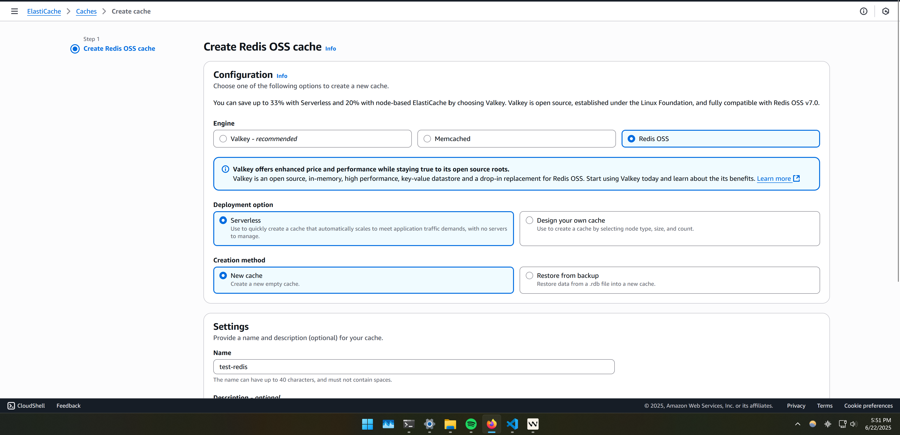

How I built A Redis LRU Cache With Python
Published: April 15, 2025
I recently wanted to optimize the latency of calls being made to an API I made.
The first thing I saw when getting my free version of Redis set up was the AWS Elasticache dashboard.
